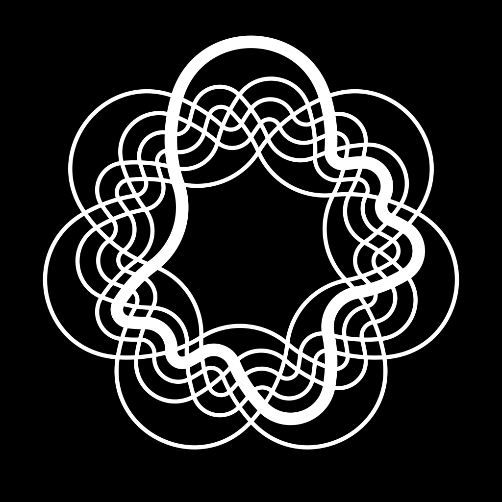
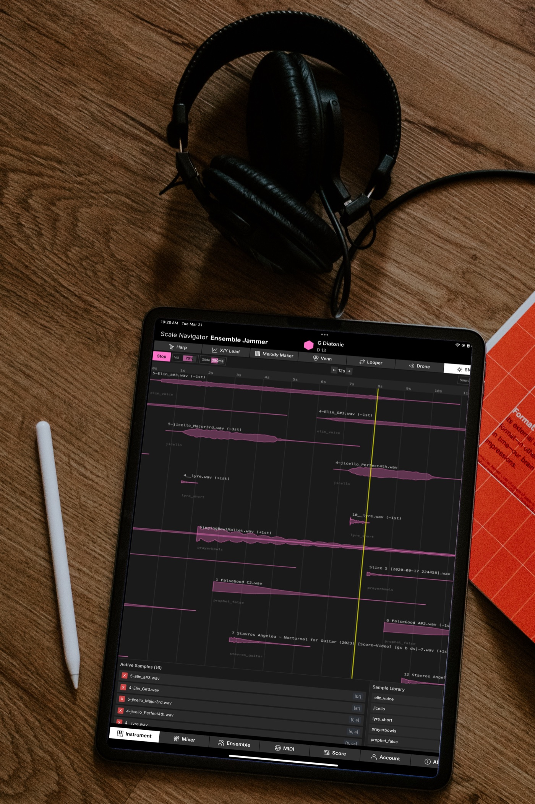
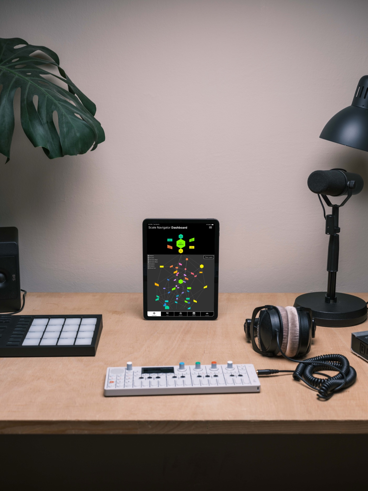
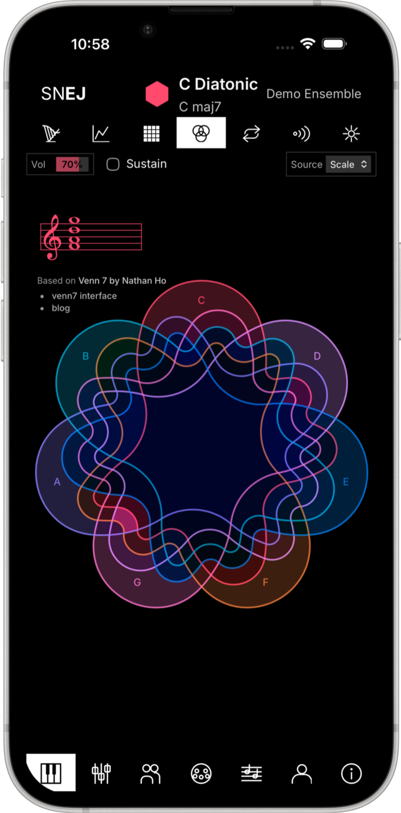
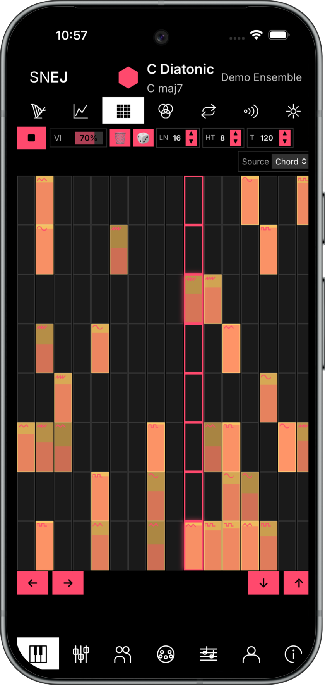
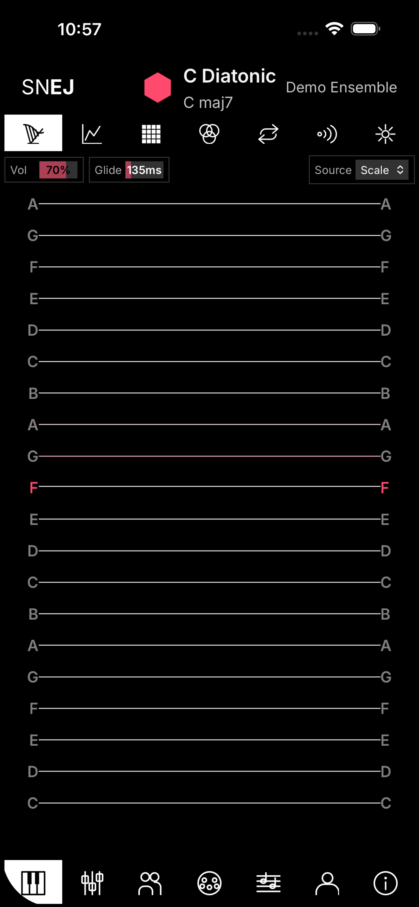
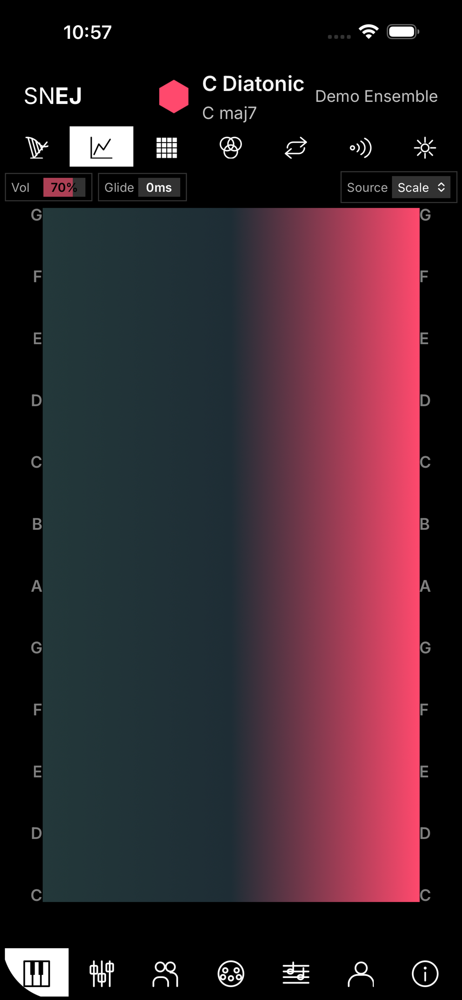
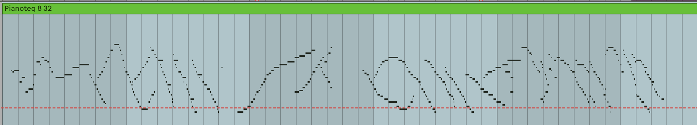

Ensemble Jammer
Role · Designer & engineer
With · Nathan Ho (Venn7 instrument, SNaPS engine)
Platforms · Web · iOS · MIDI out · Tone.js / Web Audio / Firebase / Web Bluetooth
A multiplayer suite of instruments tuned to one shared harmony. No note can be wrong, so speed, fluency, and expression arrive the moment you join the ensemble.
The salon test: eleven friends improvising a piano concerto, most of them performing for the first time.
Problem
Making music with other people is harder than it should be. If you don't know the key, don't know the chords, or can't keep up with the harmony, it's easy to feel like you're getting in the way instead of contributing.
I wanted harmony to disappear as a problem: if you don't know the key, the instrument should know it for you, and if you can't keep up, the interface should keep up for you. Ensemble Jammer is the result, a suite of networked instruments where every note you can play fits the current harmony, so anyone can improvise together, even people who've never played before. And it lives on phones for a simple reason: everyone already has one.
Prototype
What I built (v1)
Not one instrument but a suite of them (Touch Harp, X/Y Lead, Melody Maker, drones, synths, sequencers, loops), all sharing a single harmonic state. Players join from a phone or tablet. A leader runs Scale Navigator Dashboard and sets the harmony. Every connected instrument automatically retunes the instant the host changes scale or chord. Each player's screen shows only the pitches that work right now.

The Venn instrument on desktop: Nathan Ho's symmetric 7-Venn diagram as a playable surface.
One of the instruments is a symmetric 7-Venn diagram designed by Nathan Ho: I wired his interface into the harmonic-state system so it retunes live as the host changes scales. Two more came directly out of SNaPS: the Looper and the Sequencer, ported as browser instruments over Christmas week 2025. In the plugin they're personal studio tools where you tag and load your own samples; here they're shared instruments. Every sample lives on Firebase, so whoever joins the ensemble is immediately playing the same library as everyone else, with nothing to download or pass around. The ensemble begins from a common sonic vocabulary.


iPads in the ensemble: the Sequencer laying samples out in time, and Dashboard, the leader's instrument, on a studio desk.
Improvising over the shared harmonic state, with Dashboard as the leader.
Failure
The salon test
I tested it at a salon performance with eleven friends after dinner, most of them non-musicians. We improvised a piano concerto together. People who'd never performed were soloing inside a minute.
But when I watched the video back, I noticed something: everyone was making music together with their faces buried in their phones. I'd solved "no wrong notes" and accidentally created "no eye contact."


The touch instruments that kept everyone's faces in their phones: Venn7 and the Melody Maker grid.
Iteration
The redesign (v2): make the phone the instrument
So I redesigned the controls to get people's heads up: instead of tapping a screen, you move the whole device.
I tried several embodied controls: tilting to shape pitch, shaking to accent notes. The one that surprised me was rotation: the four cardinal points of the compass map to pitch, and turning your whole body spins you up or down through octaves. Register becomes something you pirouette through instead of selecting on a screen.


Iteration
The campfire problem (v3)
Before a three-day backpacking trip, my friends and I wanted to play around the campfire. Phones in everyone's pockets, no Wi-Fi for miles. The whole instrument depended on Firebase networking, so it was dead the moment we left the router behind.
I rewrote the sync layer for Bluetooth Low Energy. An ensemble now works fully offline, no infrastructure required. That matters for live gigs and workshops where network reliability is the thing most likely to ruin a performance.


Outcome
Where it is now
Since the iOS launch in April 2026: 16% conversion rate (>75th percentile for music apps), 299 downloads. The initial spike came from a coordinated Reddit rollout across r/ipadmusic, r/synthesizers, and r/musictheory.
The instruments also turned out to work as controllers. In harp mode Ensemble Jammer sends MIDI, so I play piano through it while the "orchestra" (loops of Giacinto Scelsi's Quattro Pezzi su una Nota Sola, gorgeous orchestrations of a single pitch class each) bends to fit whatever harmony I set from the phone. An instant impressionist piano concerto.
That grew into a studio workflow: I lock a progression into Dashboard with automation, then run five or six takes through the harp without thinking about the changes at all, only about expression. The takes come out as fluid melodic curves I could never finger on a keyboard.

One take of harp-mode MIDI: fluid curves, no wrong notes.
Improvising a piano concerto: Scelsi's one-note orchestrations looped in Ensemble Jammer, piano played through harp mode, Dashboard on the phone syncing the harmony across everything.
Nighttime Bells and Fauna: another session on the same rig.
What's still unfinished
There's a criticism I still haven't fully answered. Lachlan Turczan, reviewing footage of the system in use, put it plainly: an instrument on which no wrong note can be played is an instrument with no stakes. He's right, and the motion controls are my first attempt at an answer, putting risk back into the body: you can't hide behind a screen when the controller is your whole body. But I don't think that answers him completely. The risk in an ensemble may live in the listening: whether you hear what the group is doing and respond, or play alone inside your safe grid. That question is still open, and it's the one I'm working on now.
Credits
Nathan Ho: the Venn7 instrument design and the SNaPS engine that became the browser instruments. Lachlan Turczan: the no-stakes critique.
Related work
Scale Navigator Dashboard — the harmonic state that Ensemble Jammer subscribes to
Tonalign — the same harmonic state, enforced on live MIDI instead of touch instruments
NotesChordScales — the inverse direction: play notes, and the system infers the harmony
SNaPS — a sampler that glides its samples to match the scale